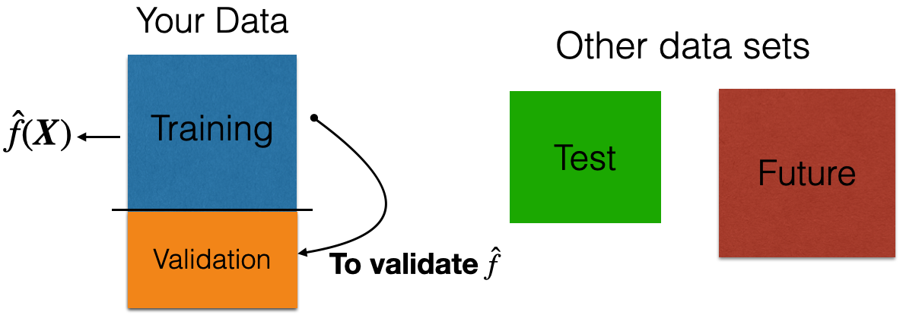

Train, Test, and Validation Datasets
IN5148: Statistics and Data Science with Applications in Engineering
Department of Industrial Engineering
Before we start,
Let’s import scikit-learn into Python together with the other relevant libraries.
We will not use all the functions from the scikit-learn library. Instead, we will use specific functions from the sub-library model_selection.
Training, validation, and test datasets
Recall that …
In data science, we assume that
\[Y = f(\boldsymbol{X}) + \epsilon\]
where \(f(\boldsymbol{X})\) represents the true relationship between \(\boldsymbol{X} = (X_1, X_2, \ldots, X_p)\) and \(Y\).
- \(f(\boldsymbol{X})\) is unknown and very complex!
Two datasets
The application of data science models needs two data sets:
Training data is data that we use to train or construct the estimated function \(\hat{f}(\boldsymbol{X})\).
Test data is data that we use to evaluate the predictive performance of \(\hat{f}(\boldsymbol{X})\) only.

A random sample of \(n\) observations.
Use it to construct \(\hat{f}(\boldsymbol{X})\).

Another random sample of \(n_t\) observations, which is independent of the training data.
Use it to evaluate \(\hat{f}(\boldsymbol{X})\).
Validation Dataset
In many practical situations, a test dataset is not available. To overcome this issue, we use a validation dataset.
Idea: Apply model to your validation dataset to mimic what will happen when you apply it to test dataset.
Example
The “BostonHousing.xlsx” contains data collected by the US Bureau of the Census concerning housing in the area of Boston, Massachusetts. The dataset includes data on 506 census housing tracts in the Boston area in 1970s.
The goal is to predict the median house price in new tracts based on information such as crime rate, pollution, and number of rooms.
The response is the median value of owner-occupied homes in $1000s, contained in the column MEDV.
The predictors
CRIM: per capita crime rate by town.ZN: proportion of residential land zoned for lots over 25,000 sq.ft.INDUS: proportion of non-retail business acres per town.CHAS: Charles River (‘Yes’ if tract bounds river; ‘No’ otherwise).NOX: nitrogen oxides concentration (parts per 10 million).RM: average number of rooms per dwelling.AGE: proportion of owner-occupied units built prior to 1940.DIS: weighted mean of distances to five Boston employment centersRAD: index of accessibility to radial highways (‘Low’, ‘Medium’, ‘High’).TAX: full-value property-tax rate per $10,000.PTRATIO: pupil-teacher ratio by town.LSTAT: lower status of the population (percent).
Read the dataset
We read the dataset and set the variable CHAS and RAD as categorical.
| CRIM | ZN | INDUS | CHAS | NOX | RM | AGE | DIS | RAD | TAX | PTRATIO | LSTAT | MEDV | |
|---|---|---|---|---|---|---|---|---|---|---|---|---|---|
| 0 | 0.00632 | 18.0 | 2.31 | No | 0.538 | 6.575 | 65.2 | 4.0900 | Low | 296 | 15.3 | 4.98 | 24.0 |
| 1 | 0.02731 | 0.0 | 7.07 | No | 0.469 | 6.421 | 78.9 | 4.9671 | Low | 242 | 17.8 | 9.14 | 21.6 |
| 2 | 0.02729 | 0.0 | 7.07 | No | 0.469 | 7.185 | 61.1 | 4.9671 | Low | 242 | 17.8 | 4.03 | 34.7 |
| 3 | 0.03237 | 0.0 | 2.18 | No | 0.458 | 6.998 | 45.8 | 6.0622 | Low | 222 | 18.7 | 2.94 | 33.4 |
| 4 | 0.06905 | 0.0 | 2.18 | No | 0.458 | 7.147 | 54.2 | 6.0622 | Low | 222 | 18.7 | 5.33 | 36.2 |
How do we generate validation data?
We split the current dataset into a training and a validation dataset. To this end, we use the function train_test_split() from scikit-learn.
The function has three main inputs:
- A pandas dataframe with the predictor columns only.
- A pandas dataframe with the response column only.
- The parameter
test_sizewhich sets the portion of the dataset that will go to the validation set.
Create the predictor matrix
We use the function .drop() from pandas. This function drops one or more columns from a data frame. Let’s drop the response column MEDV and store the result in X_full.
| CRIM | ZN | INDUS | CHAS | NOX | RM | AGE | DIS | RAD | TAX | PTRATIO | LSTAT | |
|---|---|---|---|---|---|---|---|---|---|---|---|---|
| 0 | 0.00632 | 18.0 | 2.31 | No | 0.538 | 6.575 | 65.2 | 4.0900 | Low | 296 | 15.3 | 4.98 |
| 1 | 0.02731 | 0.0 | 7.07 | No | 0.469 | 6.421 | 78.9 | 4.9671 | Low | 242 | 17.8 | 9.14 |
| 2 | 0.02729 | 0.0 | 7.07 | No | 0.469 | 7.185 | 61.1 | 4.9671 | Low | 242 | 17.8 | 4.03 |
| 3 | 0.03237 | 0.0 | 2.18 | No | 0.458 | 6.998 | 45.8 | 6.0622 | Low | 222 | 18.7 | 2.94 |
Create the response column
We use the function .filter() from pandas to extract the column MEDV from the data frame. We store the result in Y_full.
Let’s partition the dataset
The function makes a clever partition of the data using the empirical distribution of the response.
Technically, it splits the data so that the distribution of the response under the training and validation sets is similar.
Usually, the proportion of the dataset that goes to the validation set is 20% or 30%.
The predictors and response in the training dataset are in the objects X_train and Y_train, respectively. We compile these objects into a single dataset using the function .concat() from pandas. The argument axis = 1 tells .concat() to concatenate the datasets by their rows.
| CRIM | ZN | INDUS | CHAS | NOX | RM | AGE | DIS | RAD | TAX | PTRATIO | LSTAT | MEDV | |
|---|---|---|---|---|---|---|---|---|---|---|---|---|---|
| 121 | 0.07165 | 0.0 | 25.65 | No | 0.581 | 6.004 | 84.1 | 2.1974 | Low | 188 | 19.1 | 14.27 | 20.3 |
| 96 | 0.11504 | 0.0 | 2.89 | No | 0.445 | 6.163 | 69.6 | 3.4952 | Low | 276 | 18.0 | 11.34 | 21.4 |
| 286 | 0.01965 | 80.0 | 1.76 | No | 0.385 | 6.230 | 31.5 | 9.0892 | Low | 241 | 18.2 | 12.93 | 20.1 |
| 85 | 0.05735 | 0.0 | 4.49 | No | 0.449 | 6.630 | 56.1 | 4.4377 | Low | 247 | 18.5 | 6.53 | 26.6 |
Equivalently, the predictors and response in the validation dataset are in the objects X_valid and Y_valid, respectively.
| CRIM | ZN | INDUS | CHAS | NOX | RM | AGE | DIS | RAD | TAX | PTRATIO | LSTAT | MEDV | |
|---|---|---|---|---|---|---|---|---|---|---|---|---|---|
| 49 | 0.21977 | 0.0 | 6.91 | No | 0.448 | 5.602 | 62.0 | 6.0877 | Low | 233 | 17.9 | 16.20 | 19.4 |
| 435 | 11.16040 | 0.0 | 18.10 | No | 0.740 | 6.629 | 94.6 | 2.1247 | High | 666 | 20.2 | 23.27 | 13.4 |
| 119 | 0.14476 | 0.0 | 10.01 | No | 0.547 | 5.731 | 65.2 | 2.7592 | Medium | 432 | 17.8 | 13.61 | 19.3 |
| 211 | 0.37578 | 0.0 | 10.59 | Yes | 0.489 | 5.404 | 88.6 | 3.6650 | Medium | 277 | 18.6 | 23.98 | 19.3 |
| 395 | 8.71675 | 0.0 | 18.10 | No | 0.693 | 6.471 | 98.8 | 1.7257 | High | 666 | 20.2 | 17.12 | 13.1 |
Work on your training dataset
After we have partitioned the data, we work on the training data to develop our predictive pipeline.
The pipeline has two main steps:
- Data preprocessing.
- Model development.
We will now discuss preprocessing techniques applied to the predictor columns in the training dataset.
Note that all preprocessing techniques will also be applied to the validation dataset and test dataset to prepare it for your model!
Return to main page

Tecnologico de Monterrey